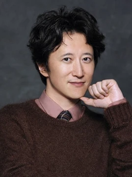
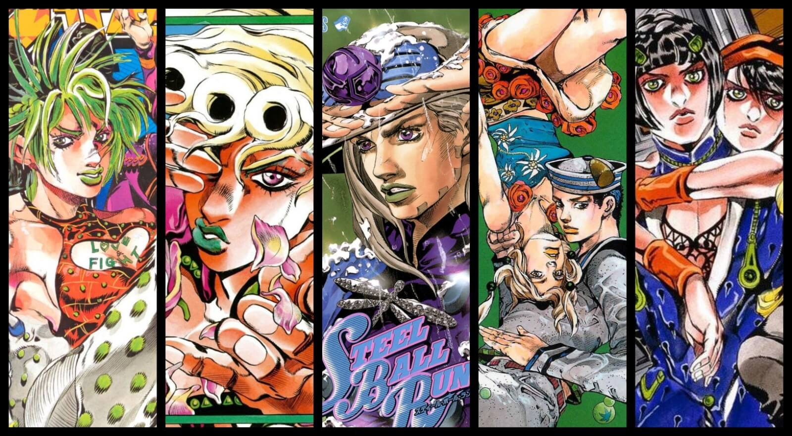
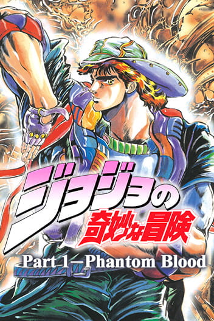
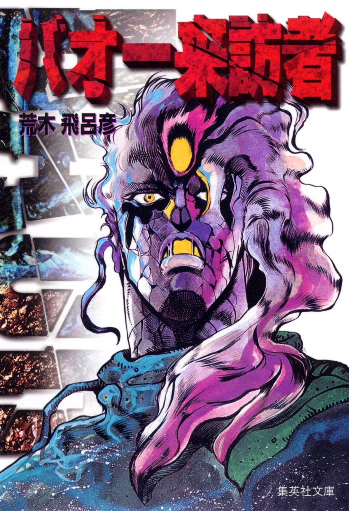
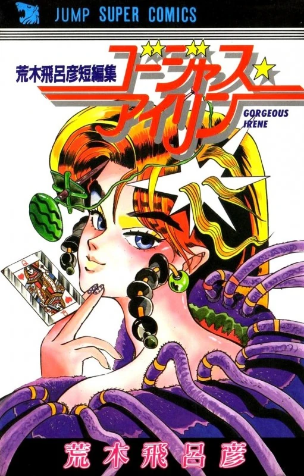

Hirohiko Araki (7 de junio de 1960, Sendai) es un mangaka japonés.
Araki nació en Sendai , Prefectura de Miyagi. Fue un niño introvertido, y un ávido lector de manga. Solía refugiarse en su cuarto para escribir y dibujar.
Desde temprana edad, le encantaba sumergirse en el "mundo de una persona" y dibujaba manga desde temprana edad. Esto no le impidió ser, al tiempo, un buen deportista, y en la secundaria formaba parte del club de kendo y el de ciclismo.
Cuando sólo era un adolescente, empezó a enviar a varias editoriales muestras de sus dibujos, sin decir nada a sus padres.
No tuvo ninguna respuesta positiva, así con apenas dieciséis años visitó las oficinas de uno de los sellos más importantes del medio, Shueisha. Consiguió convencer a un editor para que examinara sus obras primerizas. Este observó que tenía un talento natural para el dibujo y lo fichó.
De este modo, se convirtió en profesional desde muy joven, y no llegó a completar sus estudios universitarios.
Después de unos años en que perfeccionó su estilo, trabajando como asistente de artistas más consolidados, hizo su debut en 1980.
Estuvo trabajando en diversas series, hasta que en 1987 se comenzó a serializar su gran obra, la que lo haría mundialmente famoso, el shonen Jojo´s Bizarre Adventure, en la célebre revista Weekly Shonen Jump. Su publicación continúa en la revista Ultra jump desde 2005.
Hirohiko Araki

(木 飛呂彦 Araki Hirohiko)
Informacación
Género:
Maculino
Ocupación
Mangaka

Obras

jojo's bizarre adventure
Género
acción, fantasia , comedia
Guión
Hirohiko Araki
Dibujo y Entintado
Hirohiko Araki
Sinopsis
“Jojo no Kimyou na Bouken” (Las extravagantes aventuras de Jojo), más conocida mundialmente como “JoJo's Bizarre Adventure”, narra la historia de la familia Joestar a través de las décadas y sus continuos enfrentamientos con el malvado vampiro Dio Brando y su legado. Una de las características más reconocibles de la obra es que está dividida en distintas partes o generaciones, totalmente autoconclusivas e independientes entre sí; aunque conectadas por la sangre, sudor y lágrimas de sus estirpes. Cada una transcurre en un tiempo y lugar distintos, y hasta gozan de su propia estética, ambientación y temática particular.

Baoh: El Visitante
Género
Terror, Acción, Aventura, Sobrenatural
Guión
Hirohiko Araki
Dibujo y Entintado
Hirohiko Araki
Sinopsis
El adolescente Ikuro Hashizawa (橋沢 育朗, hashizawa ikurō?) es secuestrado por el Laboratorio Doress (Laboratorio Judas en el manga en inglés) y fue convertido en un Baoh, un arma biológica con fuerza y otras habilidades sobrehumanas.

Gorgeous Irene
Género
terror fantástico
Guión
Hirohiko Araki
Dibujo y Entintado
Hirohiko Araki
Sinopsis
Irene es una asesina profesional que es capaz de transformarse en cualquier tipo de mujer usando su poder de "maquillaje", pero en lugar de matar a sangre fría, utiliza sus habilidades para el bien.